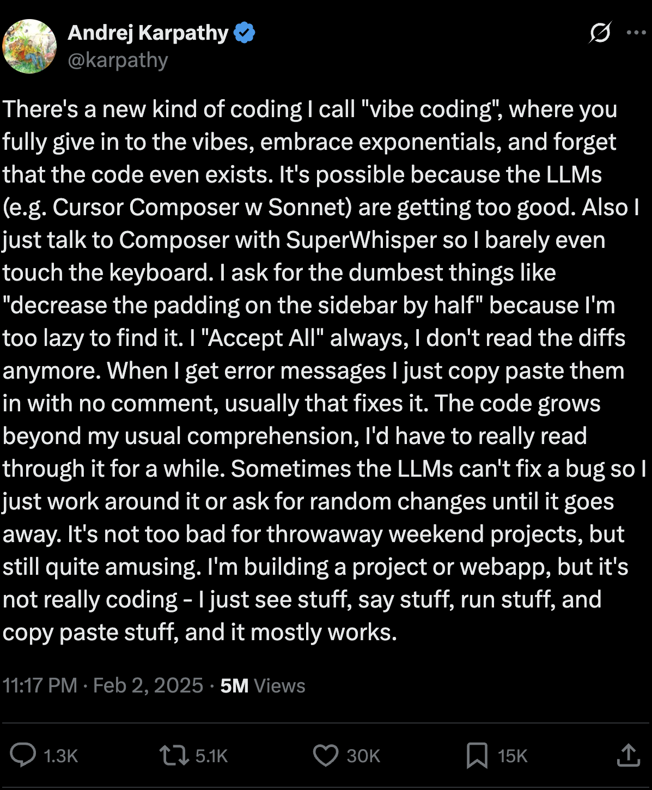

class: center, middle # Vibe Coding for Problem Solvers ## Translating Intent to LLMs **By Lucas Soares** 12/09/2025 --- # About Me <div style="display: flex; align-items: center; justify-content: center; gap: 40px; margin: 40px 0;"> <div> <img src="../assets/profile_pic.png" width="250px" style="border-radius: 10px;"> </div> <div style="max-width: 400px;"> <h3>AI Engineer & Instructor</h3> <p style="font-size: 18px; margin: 15px 0;">Passionate about AI-augmented development</p> <p style="font-size: 18px; margin: 15px 0;">Building tools and teaching workflows</p> <p style="font-size: 18px; margin: 15px 0;">Focus on practical AI integration</p> </div> </div> --- # Methodology Notes -- 1. Presentation Block -- 2. Demo -- 3. Q&A + Summary -- 4. Break -- 5. Recap -- 6. Repeat --- # What You'll Learn Today <div style="display: grid; grid-template-columns: 1fr 1fr; gap: 24px; margin: 30px 0;"> <div style="background: #fff; border: 1.5px solid #111; border-radius: 18px; padding: 20px; text-align: center;"> <div style="font-size: 2.5em; margin-bottom: 12px;">1</div> <div style="font-size: 1.1em; font-weight: 600;">Define & Distinguish</div> <p style="font-size: 0.9em; color: #555;">What vibe coding is and isn't</p> </div> <div style="background: #f5f5f5; border: 1.5px solid #111; border-radius: 18px; padding: 20px; text-align: center;"> <div style="font-size: 2.5em; margin-bottom: 12px;">2</div> <div style="font-size: 1.1em; font-weight: 600;">4 Core Skills</div> <p style="font-size: 0.9em; color: #555;">Prompting, Context, Delegation, Verification</p> </div> <div style="background: #f5f5f5; border: 1.5px solid #111; border-radius: 18px; padding: 20px; text-align: center;"> <div style="font-size: 2.5em; margin-bottom: 12px;">3</div> <div style="font-size: 1.1em; font-weight: 600;">Practical Patterns</div> <p style="font-size: 0.9em; color: #555;">5 immediately usable workflows</p> </div> <div style="background: #fff; border: 1.5px solid #111; border-radius: 18px; padding: 20px; text-align: center;"> <div style="font-size: 2.5em; margin-bottom: 12px;">4</div> <div style="font-size: 1.1em; font-weight: 600;">Case Study & Demo</div> <p style="font-size: 0.9em; color: #555;">Real-world vibe coding in action</p> </div> </div> --- class: center, middle # Part 1: What is Vibe Coding? --- <div style="display: flex; justify-content: center; margin: 40px 0;">  </div> <div style="position: absolute; bottom: 30px; width: 100%; left: 0; text-align: left;"> <p style="font-size: 14px; margin-bottom: 0px; margin-left: 36px;"> <sup>[1]</sup><a href="https://twitter.com/karpathy" style="color: #555;">Andrej Karpathy on Twitter, Feb 2025</a> </p> </div> --- # The Critical Distinction <div style="display: grid; grid-template-columns: 1fr auto 1fr; gap: 20px; align-items: center; margin: 40px 0;"> <div style="border: 2px solid #e74c3c; padding: 25px; border-radius: 15px; background-color: #fee; text-align: center;"> <h3 style="color: #e74c3c;">Vibe Coding</h3> <p style="font-size: 16px;"><strong>"Building software with an LLM without reviewing the code it writes"</strong></p> <p style="font-size: 14px;"><em>- Simon Willison, 2025</em></p> </div> <div style="font-size: 48px; color: #666;">≠</div> <div style="border: 2px solid #27ae60; padding: 25px; border-radius: 15px; background-color: #e8f5e8; text-align: center;"> <h3 style="color: #27ae60;">AI-Assisted Programming</h3> <p style="font-size: 16px;"><strong>Review, understand, and take accountability</strong></p> <p style="font-size: 14px;"><em>Using AI as a typing assistant</em></p> </div> </div> <div style="border: 2px solid #f39c12; padding: 15px; border-radius: 10px; background-color: #fff8e1; margin-top: 20px;"> <p style="font-size: 14px; margin: 0;"><strong>Simon Willison:</strong> "I'm concerned that people are applying the term 'vibe coding' to ALL forms of code written with AI assistance. This dilutes the term and gives a false impression of responsible AI-assisted programming."</p> </div> <div style="position: absolute; bottom: 30px; width: 100%; left: 0; text-align: left;"> <p style="font-size: 14px; margin-bottom: 0px; margin-left: 36px;"> <sup>[1]</sup><a href="https://simonwillison.net" style="color: #555;">Simon Willison, March 2025</a> </p> </div> --- # When to Vibe Code <div style="display: flex; justify-content: center; gap: 30px; margin: 30px 0;"> <div style="background-color: #e8f5e8; padding: 25px; border-radius: 15px; max-width: 350px; border: 2px solid #27ae60;"> <h3 style="text-align: center; color: #27ae60;">Safe Zone</h3> <div style="margin-top: 15px;"> <p>✓ Throwaway weekend projects</p> <p>✓ Low-stakes experiments</p> <p>✓ Learning and building intuition</p> <p>✓ One-off data processing scripts</p> <p>✓ Personal prototypes</p> </div> </div> <div style="background-color: #fee; padding: 25px; border-radius: 15px; max-width: 350px; border: 2px solid #e74c3c;"> <h3 style="text-align: center; color: #e74c3c;">Danger Zone</h3> <div style="margin-top: 15px;"> <p>✗ Production systems</p> <p>✗ Security-critical applications</p> <p>✗ Code others must maintain</p> <p>✗ High-stakes business logic</p> <p>✗ Financial/medical systems</p> </div> </div> </div> --- class: center, middle # The Spectrum of AI-Augmented Development --- # Trade-offs Spectrum <div style="margin: 30px 0;"> <div style="display: flex; height: 70px; border-radius: 35px; overflow: hidden; box-shadow: 0 2px 12px rgba(0,0,0,0.1);"> <div style="flex: 1; background: linear-gradient(135deg, #e74c3c, #c0392b); display: flex; align-items: center; justify-content: center; color: white; font-weight: bold; font-family: 'Yanone Kaffeesatz'; font-size: 1.2em;"> Vibe Coding </div> <div style="flex: 1; background: linear-gradient(135deg, #f39c12, #e67e22); display: flex; align-items: center; justify-content: center; color: white; font-weight: bold; font-family: 'Yanone Kaffeesatz'; font-size: 1.2em;"> AI-Assisted </div> <div style="flex: 1; background: linear-gradient(135deg, #27ae60, #1e8449); display: flex; align-items: center; justify-content: center; color: white; font-weight: bold; font-family: 'Yanone Kaffeesatz'; font-size: 1.2em;"> Full Engineering </div> </div> </div> <div style="display: grid; grid-template-columns: 1fr 1fr 1fr; gap: 15px; font-size: 14px;"> <div style="text-align: center; padding: 15px; background: #fee; border-radius: 10px;"> <p><strong>Speed:</strong> Maximum</p> <p><strong>Review:</strong> None</p> <p><strong>Control:</strong> Low</p> <p><strong>Risk:</strong> High</p> </div> <div style="text-align: center; padding: 15px; background: #fff8e1; border-radius: 10px;"> <p><strong>Speed:</strong> High</p> <p><strong>Review:</strong> Strategic</p> <p><strong>Control:</strong> Shared</p> <p><strong>Risk:</strong> Managed</p> </div> <div style="text-align: center; padding: 15px; background: #e8f5e8; border-radius: 10px;"> <p><strong>Speed:</strong> Moderate</p> <p><strong>Review:</strong> Comprehensive</p> <p><strong>Control:</strong> Full</p> <p><strong>Risk:</strong> Low</p> </div> </div> --- # Tool Landscape Overview <div style="display: grid; grid-template-columns: repeat(4, 1fr); gap: 15px; margin: 30px 0;"> <div style="background: #f0f8ff; padding: 15px; border-radius: 10px; text-align: center;"> <div style="font-size: 2em; margin-bottom: 8px;">Web</div> <p style="font-size: 13px; margin: 5px 0;">Claude Artifacts</p> <p style="font-size: 13px; margin: 5px 0;">ChatGPT Canvas</p> <p style="font-size: 13px; margin: 5px 0;">v0, Lovable</p> </div> <div style="background: #f0fff0; padding: 15px; border-radius: 10px; text-align: center;"> <div style="font-size: 2em; margin-bottom: 8px;">IDE</div> <p style="font-size: 13px; margin: 5px 0;">Cursor</p> <p style="font-size: 13px; margin: 5px 0;">GitHub Copilot</p> <p style="font-size: 13px; margin: 5px 0;">Windsurf</p> </div> <div style="background: #fff8f0; padding: 15px; border-radius: 10px; text-align: center;"> <div style="font-size: 2em; margin-bottom: 8px;">Terminal</div> <p style="font-size: 13px; margin: 5px 0;">Claude Code</p> <p style="font-size: 13px; margin: 5px 0;">Aider</p> <p style="font-size: 13px; margin: 5px 0;">OpenAI Codex</p> </div> <div style="background: #f8f0ff; padding: 15px; border-radius: 10px; text-align: center;"> <div style="font-size: 2em; margin-bottom: 8px;">Cloud</div> <p style="font-size: 13px; margin: 5px 0;">Replit</p> <p style="font-size: 13px; margin: 5px 0;">CodeSandbox</p> <p style="font-size: 13px; margin: 5px 0;">GitHub Codespaces</p> </div> </div> <div style="text-align: center; font-style: italic; color: #666;"> See Appendix for detailed pricing and feature comparison </div> --- class: center, middle <h1> <span style="background-color: lightgreen"> Whiteboard: The Spectrum in Practice </span> </h1> --- class: center, middle # Q&A --- class: center, middle # Part 2: The 4 Core Skills --- # Skills Overview <div style="display: grid; grid-template-columns: 1fr 1fr; gap: 20px; margin: 30px 0;"> <div style="background: #fff; border: 2px solid #3498db; border-radius: 15px; padding: 20px;"> <h3 style="color: #3498db; margin-top: 0;">1. Prompting</h3> <p>Clear, specific instructions that get results</p> </div> <div style="background: #fff; border: 2px solid #e67e22; border-radius: 15px; padding: 20px;"> <h3 style="color: #e67e22; margin-top: 0;">2. Context Management</h3> <p>Feeding the right information to LLMs</p> </div> <div style="background: #fff; border: 2px solid #27ae60; border-radius: 15px; padding: 20px;"> <h3 style="color: #27ae60; margin-top: 0;">3. Capability Assignment</h3> <p>Knowing what to delegate and to which tool</p> </div> <div style="background: #fff; border: 2px solid #9b59b6; border-radius: 15px; padding: 20px;"> <h3 style="color: #9b59b6; margin-top: 0;">4. Vibe Checking</h3> <p>Lightweight verification without over-engineering</p> </div> </div> --- class: center, middle # Skill 1: Prompting ## The Foundation of Vibe Coding --- # The 6 Prompting Sub-Skills <div style="display: grid; grid-template-columns: 1fr 1fr 1fr; gap: 15px; margin: 25px 0;"> <div style="background: #e8f4fd; padding: 18px; border-radius: 12px; text-align: center; border-left: 4px solid #3498db;"> <div style="font-size: 1.8em; margin-bottom: 8px;">1</div> <h4 style="margin: 5px 0;">Clear & Direct</h4> <p style="font-size: 13px; color: #555;">Specific, unambiguous</p> </div> <div style="background: #fff3cd; padding: 18px; border-radius: 12px; text-align: center; border-left: 4px solid #f39c12;"> <div style="font-size: 1.8em; margin-bottom: 8px;">2</div> <h4 style="margin: 5px 0;">Decomposition</h4> <p style="font-size: 13px; color: #555;">Break into steps</p> </div> <div style="background: #d4edda; padding: 18px; border-radius: 12px; text-align: center; border-left: 4px solid #27ae60;"> <div style="font-size: 1.8em; margin-bottom: 8px;">3</div> <h4 style="margin: 5px 0;">Examples</h4> <p style="font-size: 13px; color: #555;">Show desired output</p> </div> </div> <div style="display: grid; grid-template-columns: 1fr 1fr 1fr; gap: 15px;"> <div style="background: #f8d7da; padding: 18px; border-radius: 12px; text-align: center; border-left: 4px solid #e74c3c;"> <div style="font-size: 1.8em; margin-bottom: 8px;">4</div> <h4 style="margin: 5px 0;">Role Assignment</h4> <p style="font-size: 13px; color: #555;">Define expertise</p> </div> <div style="background: #e7e7ff; padding: 18px; border-radius: 12px; text-align: center; border-left: 4px solid #9b59b6;"> <div style="font-size: 1.8em; margin-bottom: 8px;">5</div> <h4 style="margin: 5px 0;">Time to Think</h4> <p style="font-size: 13px; color: #555;">Request reasoning</p> </div> <div style="background: #f0fff4; padding: 18px; border-radius: 12px; text-align: center; border-left: 4px solid #1e8449;"> <div style="font-size: 1.8em; margin-bottom: 8px;">6</div> <h4 style="margin: 5px 0;">Constraints</h4> <p style="font-size: 13px; color: #555;">Specify format/limits</p> </div> </div> <div style="position: absolute; bottom: 22px; width: 100%; left: 0; text-align: left;"> <p style="font-size: 13px; margin-bottom: 0px; margin-left: 36px;"> <sup>[1]</sup><a href="https://anthropic.skilljar.com/ai-fluency-framework-foundations" style="color: #555;">Anthropic - AI Fluency</a> </p> </div> --- # The Prompting Skills Cycle <div style="display: flex; justify-content: center; align-items: center; margin-top: 10px;"> <svg width="650" height="420" viewBox="0 0 650 420"> <!-- Central hub --> <circle cx="325" cy="210" r="55" fill="#f5f5f5" stroke="#333" stroke-width="2"/> <text x="325" y="200" text-anchor="middle" font-size="12" font-weight="bold" fill="#333">Effective</text> <text x="325" y="218" text-anchor="middle" font-size="12" font-weight="bold" fill="#333">Prompting</text> <!-- Node 1: Clear & Direct (top) --> <rect x="260" y="15" width="130" height="50" rx="8" fill="#e8f4fd" stroke="#3498db" stroke-width="2"/> <text x="325" y="38" text-anchor="middle" font-size="13" font-weight="bold" fill="#333">1. Clear & Direct</text> <text x="325" y="54" text-anchor="middle" font-size="10" fill="#555">Specific, unambiguous</text> <!-- Node 2: Decomposition (top-right) --> <rect x="480" y="85" width="130" height="50" rx="8" fill="#fff3cd" stroke="#f39c12" stroke-width="2"/> <text x="545" y="108" text-anchor="middle" font-size="13" font-weight="bold" fill="#333">2. Decomposition</text> <text x="545" y="124" text-anchor="middle" font-size="10" fill="#555">Break into steps</text> <!-- Node 3: Examples (bottom-right) --> <rect x="480" y="280" width="130" height="50" rx="8" fill="#d4edda" stroke="#27ae60" stroke-width="2"/> <text x="545" y="303" text-anchor="middle" font-size="13" font-weight="bold" fill="#333">3. Examples</text> <text x="545" y="319" text-anchor="middle" font-size="10" fill="#555">Show desired output</text> <!-- Node 4: Role Assignment (bottom) --> <rect x="260" y="355" width="130" height="50" rx="8" fill="#f8d7da" stroke="#e74c3c" stroke-width="2"/> <text x="325" y="378" text-anchor="middle" font-size="13" font-weight="bold" fill="#333">4. Role Assignment</text> <text x="325" y="394" text-anchor="middle" font-size="10" fill="#555">Define expertise</text> <!-- Node 5: Time to Think (bottom-left) --> <rect x="40" y="280" width="130" height="50" rx="8" fill="#e7e7ff" stroke="#9b59b6" stroke-width="2"/> <text x="105" y="303" text-anchor="middle" font-size="13" font-weight="bold" fill="#333">5. Time to Think</text> <text x="105" y="319" text-anchor="middle" font-size="10" fill="#555">Request reasoning</text> <!-- Node 6: Constraints (top-left) --> <rect x="40" y="85" width="130" height="50" rx="8" fill="#f0fff4" stroke="#1e8449" stroke-width="2"/> <text x="105" y="108" text-anchor="middle" font-size="13" font-weight="bold" fill="#333">6. Constraints</text> <text x="105" y="124" text-anchor="middle" font-size="10" fill="#555">Specify format/limits</text> <!-- Curved arrows connecting nodes clockwise --> <defs> <marker id="arrowhead" markerWidth="10" markerHeight="7" refX="9" refY="3.5" orient="auto"> <polygon points="0 0, 10 3.5, 0 7" fill="#666"/> </marker> </defs> <!-- Arrow 1→2 --> <path d="M 390 40 Q 450 40 475 85" fill="none" stroke="#666" stroke-width="2" marker-end="url(#arrowhead)"/> <!-- Arrow 2→3 --> <path d="M 545 135 Q 570 200 545 275" fill="none" stroke="#666" stroke-width="2" marker-end="url(#arrowhead)"/> <!-- Arrow 3→4 --> <path d="M 475 330 Q 420 360 390 365" fill="none" stroke="#666" stroke-width="2" marker-end="url(#arrowhead)"/> <!-- Arrow 4→5 --> <path d="M 260 380 Q 200 380 175 330" fill="none" stroke="#666" stroke-width="2" marker-end="url(#arrowhead)"/> <!-- Arrow 5→6 --> <path d="M 105 280 Q 80 200 105 140" fill="none" stroke="#666" stroke-width="2" marker-end="url(#arrowhead)"/> <!-- Arrow 6→1 --> <path d="M 175 90 Q 220 50 255 40" fill="none" stroke="#666" stroke-width="2" marker-end="url(#arrowhead)"/> <!-- Lines to center --> <line x1="325" y1="65" x2="325" y2="155" stroke="#ddd" stroke-width="1" stroke-dasharray="4"/> <line x1="480" y1="110" x2="375" y2="180" stroke="#ddd" stroke-width="1" stroke-dasharray="4"/> <line x1="480" y1="305" x2="375" y2="240" stroke="#ddd" stroke-width="1" stroke-dasharray="4"/> <line x1="325" y1="355" x2="325" y2="265" stroke="#ddd" stroke-width="1" stroke-dasharray="4"/> <line x1="170" y1="305" x2="275" y2="240" stroke="#ddd" stroke-width="1" stroke-dasharray="4"/> <line x1="170" y1="110" x2="275" y2="180" stroke="#ddd" stroke-width="1" stroke-dasharray="4"/> </svg> </div> <p style="text-align: center; font-size: 14px; color: #666; margin-top: 5px;">Each skill reinforces the others in an iterative prompting workflow</p> --- # Bad vs Good Prompts <div style="display: flex; justify-content: space-around; margin: 30px 0; gap: 20px;"> <div style="background-color: #fee; padding: 20px; border-radius: 10px; flex: 1; border: 2px solid #e74c3c;"> <h3 style="color: #e74c3c;">Vague</h3> <p style="font-style: italic; background-color: white; padding: 10px; border-radius: 5px; font-size: 14px;">"Can you help me with my code?"</p> <p style="font-size: 13px;"><strong>Problems:</strong> No context, no task, no guidance</p> </div> <div style="background-color: #e8f5e8; padding: 20px; border-radius: 10px; flex: 1; border: 2px solid #27ae60;"> <h3 style="color: #27ae60;">Clear & Direct</h3> <p style="font-style: italic; background-color: white; padding: 10px; border-radius: 5px; font-size: 14px;">"Write a Python function that validates email addresses using regex, returns True/False, and includes error handling"</p> <p style="font-size: 13px;"><strong>Why it works:</strong> Language, output, requirements specified</p> </div> </div> --- # Decomposition: Break It Down <div style="margin: 20px 0;"> <div style="background-color: #fee; padding: 15px; border-radius: 8px; border: 2px solid #e74c3c; margin-bottom: 20px;"> <h4 style="color: #e74c3c; margin-top: 0;">Instead of this massive prompt:</h4> <p style="font-style: italic; font-size: 14px;">"Build me a complete e-commerce website with user authentication, product catalog, shopping cart, payment processing, and admin dashboard"</p> </div> <div style="background-color: #e8f5e8; padding: 15px; border-radius: 8px; border: 2px solid #27ae60;"> <h4 style="color: #27ae60; margin-top: 0;">Break it into digestible steps:</h4> <ol style="font-size: 14px; margin: 0;"> <li><strong>Step 1:</strong> "Design the database schema for users, products, and orders"</li> <li><strong>Step 2:</strong> "Create user authentication endpoints"</li> <li><strong>Step 3:</strong> "Build product catalog with search"</li> <li><strong>Step 4:</strong> "Implement shopping cart logic"</li> </ol> </div> </div> --- # Examples: Show What You Want <div style="display: flex; justify-content: space-around; margin: 25px 0; gap: 20px;"> <div style="background-color: #fee; padding: 20px; border-radius: 10px; flex: 1; border: 2px solid #e74c3c;"> <h3 style="color: #e74c3c;">Without Examples</h3> <p style="font-style: italic; background-color: white; padding: 10px; border-radius: 5px; font-size: 14px;">"Write a function to format dates"</p> <p style="font-size: 13px;"><strong>Result:</strong> Unpredictable format, may not match your needs</p> </div> <div style="background-color: #e8f5e8; padding: 20px; border-radius: 10px; flex: 1; border: 2px solid #27ae60;"> <h3 style="color: #27ae60;">With Examples</h3> <p style="font-style: italic; background-color: white; padding: 10px; border-radius: 5px; font-size: 14px;">"Write a function to format dates like these examples:<br> Input: 2025-01-15 → Output: 'Jan 15, 2025'<br> Input: 2025-12-25 → Output: 'Dec 25, 2025'"</p> <p style="font-size: 13px;"><strong>Result:</strong> Exact format you need</p> </div> </div> <div style="background-color: #f0f8ff; padding: 15px; border-radius: 10px;"> <p style="margin: 0; font-size: 14px;"><strong>Pro tip:</strong> Include 2-3 examples covering edge cases (empty input, special characters, boundary conditions)</p> </div> --- # Role Assignment: Define Expertise <div style="display: flex; justify-content: space-around; margin: 25px 0; gap: 20px;"> <div style="background-color: #fee; padding: 20px; border-radius: 10px; flex: 1; border: 2px solid #e74c3c;"> <h3 style="color: #e74c3c;">Generic Request</h3> <p style="font-style: italic; background-color: white; padding: 10px; border-radius: 5px; font-size: 14px;">"Review this SQL query for issues"</p> <p style="font-size: 13px;"><strong>Result:</strong> Surface-level feedback</p> </div> <div style="background-color: #e8f5e8; padding: 20px; border-radius: 10px; flex: 1; border: 2px solid #27ae60;"> <h3 style="color: #27ae60;">With Role Assignment</h3> <p style="font-style: italic; background-color: white; padding: 10px; border-radius: 5px; font-size: 14px;">"You are a senior database administrator with 15 years of experience optimizing PostgreSQL queries for high-traffic applications. Review this SQL query for performance issues and security vulnerabilities."</p> <p style="font-size: 13px;"><strong>Result:</strong> Expert-level analysis</p> </div> </div> <div style="background-color: #fff3cd; padding: 15px; border-radius: 10px;"> <p style="margin: 0; font-size: 14px;"><strong>Effective roles:</strong> "Senior engineer", "Security auditor", "Code reviewer", "Technical writer", "System architect"</p> </div> --- # Time to Think: Request Reasoning <div style="display: flex; justify-content: space-around; margin: 25px 0; gap: 20px;"> <div style="background-color: #fee; padding: 20px; border-radius: 10px; flex: 1; border: 2px solid #e74c3c;"> <h3 style="color: #e74c3c;">Rushed Answer</h3> <p style="font-style: italic; background-color: white; padding: 10px; border-radius: 5px; font-size: 14px;">"Which sorting algorithm is fastest?"</p> <p style="font-size: 13px;"><strong>Result:</strong> Quick but potentially wrong answer</p> </div> <div style="background-color: #e8f5e8; padding: 20px; border-radius: 10px; flex: 1; border: 2px solid #27ae60;"> <h3 style="color: #27ae60;">With Thinking Time</h3> <p style="font-style: italic; background-color: white; padding: 10px; border-radius: 5px; font-size: 14px;">"Think step by step about which sorting algorithm would be fastest for my use case: 10,000 mostly-sorted integers. Consider time complexity, space constraints, and cache efficiency before recommending."</p> <p style="font-size: 13px;"><strong>Result:</strong> Reasoned recommendation</p> </div> </div> <div style="background-color: #e7e7ff; padding: 15px; border-radius: 10px;"> <p style="margin: 0; font-size: 14px;"><strong>Magic phrases:</strong> "Think step by step", "Before answering, consider...", "Walk through your reasoning", "Explain your approach first"</p> </div> --- # Constraints: Specify Format & Limits <div style="display: flex; justify-content: space-around; margin: 25px 0; gap: 20px;"> <div style="background-color: #fee; padding: 20px; border-radius: 10px; flex: 1; border: 2px solid #e74c3c;"> <h3 style="color: #e74c3c;">Open-Ended</h3> <p style="font-style: italic; background-color: white; padding: 10px; border-radius: 5px; font-size: 14px;">"Write a user authentication system"</p> <p style="font-size: 13px;"><strong>Result:</strong> Might get 500 lines of enterprise Java</p> </div> <div style="background-color: #e8f5e8; padding: 20px; border-radius: 10px; flex: 1; border: 2px solid #27ae60;"> <h3 style="color: #27ae60;">With Constraints</h3> <p style="font-style: italic; background-color: white; padding: 10px; border-radius: 5px; font-size: 14px;">"Write a user authentication function in Python.<br> Constraints:<br> - Max 50 lines of code<br> - Use bcrypt for hashing<br> - Return a JWT token<br> - No external dependencies except bcrypt and PyJWT"</p> <p style="font-size: 13px;"><strong>Result:</strong> Focused, usable code</p> </div> </div> <div style="background-color: #f0fff4; padding: 15px; border-radius: 10px;"> <p style="margin: 0; font-size: 14px;"><strong>Useful constraints:</strong> Language, line count, libraries, output format (JSON/XML), response length, style guidelines</p> </div> --- # Real Vibe Coding Prompts <div style="margin: 20px 0;"> <div style="background-color: #e8f4fd; padding: 15px; border-radius: 8px; margin-bottom: 15px;"> <h4 style="margin-top: 0;">For Codex (Autonomous Task):</h4> <p style="font-style: italic; background-color: white; padding: 10px; border-radius: 5px; font-size: 13px;">"Install playwright and use it to visit https://opensauce.com/agenda/ and grab the full details of all three day schedules from the tabs - Friday and Saturday and Sunday - then save data in as much detail as possible in a JSON file and submit that as a PR"</p> </div> <div style="background-color: #fff3cd; padding: 15px; border-radius: 8px;"> <h4 style="margin-top: 0;">For Claude (Iterative Building):</h4> <p style="font-style: italic; background-color: white; padding: 10px; border-radius: 5px; font-size: 13px;">"Build an artifact with no react that turns the schedule into a nice mobile friendly webpage - there are three days Friday, Saturday and Sunday. Don't copy the raw JSON over - fetch from this URL instead. Also include a button to download ICS at the top."</p> </div> </div> <div style="position: absolute; bottom: 30px; width: 100%; left: 0; text-align: left;"> <p style="font-size: 14px; margin-bottom: 0px; margin-left: 36px;"> <sup>[1]</sup><a href="https://simonwillison.net/2025/Jul/17/vibe-scraping/" style="color: #555;">Simon Willison - Vibe scraping for Open Sauce 2025</a> </p> </div> --- class: center, middle # Skill 2: Context Management ## Feeding the Right Information to LLMs --- # The 4 Context Strategies <div style="display: grid; grid-template-columns: 1fr 1fr; gap: 20px; margin: 30px 0;"> <div style="background: #e8f4fd; padding: 20px; border-radius: 12px; border-left: 4px solid #3498db;"> <h4 style="margin-top: 0;">Write Context</h4> <p style="font-size: 14px;">Save information outside the context window</p> <p style="font-size: 12px; color: #666;"><em>External memory, documentation files</em></p> </div> <div style="background: #fff3cd; padding: 20px; border-radius: 12px; border-left: 4px solid #f39c12;"> <h4 style="margin-top: 0;">Select Context</h4> <p style="font-size: 14px;">Pull relevant information when needed</p> <p style="font-size: 12px; color: #666;"><em>RAG systems, smart file selection</em></p> </div> <div style="background: #d4edda; padding: 20px; border-radius: 12px; border-left: 4px solid #27ae60;"> <h4 style="margin-top: 0;">Compress Context</h4> <p style="font-size: 14px;">Retain only essential tokens</p> <p style="font-size: 12px; color: #666;"><em>Summaries, sliding windows</em></p> </div> <div style="background: #f8d7da; padding: 20px; border-radius: 12px; border-left: 4px solid #e74c3c;"> <h4 style="margin-top: 0;">Isolate Context</h4> <p style="font-size: 14px;">Split context across different agents</p> <p style="font-size: 12px; color: #666;"><em>Multi-agent architectures</em></p> </div> </div> <div style="position: absolute; bottom: 30px; width: 100%; left: 0; text-align: left;"> <p style="font-size: 14px; margin-bottom: 0px; margin-left: 36px;"> <sup>[1]</sup><a href="https://blog.langchain.com/context-engineering-for-agents/" style="color: #555;">LangChain Blog - Context Engineering for Agents</a> </p> </div> --- # Strategy 1: Write Context <div style="display: flex; justify-content: center; margin: 20px 0;"> <div style="border: 2px solid #3498db; padding: 25px; border-radius: 15px; background-color: #e8f4fd; max-width: 650px;"> <h3 style="margin-top: 0; color: #3498db;">Save Information Outside the Context Window</h3> <p style="font-size: 15px;">Store important context in external files that persist across conversations</p> </div> </div> <div style="display: grid; grid-template-columns: 1fr 1fr; gap: 20px; margin: 20px 0;"> <div style="background: white; padding: 15px; border-radius: 10px; border: 1px solid #ddd;"> <h4 style="margin-top: 0;">Examples</h4> <ul style="font-size: 14px; margin: 0; padding-left: 20px;"> <li><code>CLAUDE.md</code> / <code>AGENTS.md</code> files</li> <li>Project documentation</li> <li>API specifications</li> <li>Decision logs</li> </ul> </div> <div style="background: white; padding: 15px; border-radius: 10px; border: 1px solid #ddd;"> <h4 style="margin-top: 0;">Benefits</h4> <ul style="font-size: 14px; margin: 0; padding-left: 20px;"> <li>Survives context resets</li> <li>Shareable across sessions</li> <li>Version controllable</li> <li>Reduces re-explanation</li> </ul> </div> </div> <div style="background-color: #fff3cd; padding: 12px; border-radius: 8px; text-align: center;"> <p style="margin: 0; font-size: 14px;"><strong>Pro tip:</strong> Create a project-level markdown file with key decisions, conventions, and context that loads automatically</p> </div> <div style="background: #f8f9fa; padding: 10px 15px; border-radius: 8px; margin-top: 12px; border-left: 3px solid #3498db;"> <p style="margin: 0; font-size: 13px;"><strong>Example from my CLAUDE.md:</strong></p> <code style="font-size: 12px; display: block; margin-top: 5px; color: #555;">- My courses are stored in: ~/Desktop/projects/oreilly-live-trainings<br>- My snippets are stored in: ~/Library/Application Support/Cursor/User/snippets/</code> </div> --- # Strategy 2: Select Context <div style="display: flex; justify-content: center; margin: 20px 0;"> <div style="border: 2px solid #f39c12; padding: 25px; border-radius: 15px; background-color: #fff3cd; max-width: 650px;"> <h3 style="margin-top: 0; color: #e67e22;">Pull Relevant Information When Needed</h3> <p style="font-size: 15px;">Dynamically retrieve context based on the current task or query</p> </div> </div> <div style="display: grid; grid-template-columns: 1fr 1fr; gap: 20px; margin: 20px 0;"> <div style="background: white; padding: 15px; border-radius: 10px; border: 1px solid #ddd;"> <h4 style="margin-top: 0;">Techniques</h4> <ul style="font-size: 14px; margin: 0; padding-left: 20px;"> <li><strong>RAG:</strong> Semantic search over docs</li> <li><strong>@-mentions:</strong> Reference specific files</li> <li><strong>Smart indexing:</strong> Codebase search</li> <li><strong>API calls:</strong> Fetch live data</li> </ul> </div> <div style="background: white; padding: 15px; border-radius: 10px; border: 1px solid #ddd;"> <h4 style="margin-top: 0;">When to Use</h4> <ul style="font-size: 14px; margin: 0; padding-left: 20px;"> <li>Large codebases (can't load all)</li> <li>Dynamic documentation</li> <li>Task-specific references</li> <li>Multi-repo projects</li> </ul> </div> </div> <div style="background-color: #e8f4fd; padding: 12px; border-radius: 8px; text-align: center;"> <p style="margin: 0; font-size: 14px;"><strong>Key insight:</strong> Don't dump everything—selectively load what's relevant to the current task</p> <div style="margin-top: 5px;"> <code style="background: #def3fc; padding: 2px 6px; border-radius: 4px; font-size: 13px;">/context-prime project_overview.md</code> <span style="font-size:13px; color:#555; margin-left: 5px;">← Example: pulls in just the core project doc, not all files</span> </div> </div> --- # Strategy 3: Compress Context <div style="display: flex; justify-content: center; margin: 20px 0;"> <div style="border: 2px solid #27ae60; padding: 25px; border-radius: 15px; background-color: #d4edda; max-width: 650px;"> <h3 style="margin-top: 0; color: #27ae60;">Retain Only Essential Tokens</h3> <p style="font-size: 15px;">Summarize or condense information to maximize context window efficiency</p> </div> </div> <div style="display: grid; grid-template-columns: 1fr 1fr; gap: 20px; margin: 20px 0;"> <div style="background: white; padding: 15px; border-radius: 10px; border: 1px solid #ddd;"> <h4 style="margin-top: 0;">Compression Methods</h4> <ul style="font-size: 14px; margin: 0; padding-left: 20px;"> <li><strong>Summaries:</strong> Condense long conversations</li> <li><strong>Sliding windows:</strong> Keep recent context</li> <li><strong>Key extraction:</strong> Pull out essentials</li> <li><strong>Hierarchical:</strong> Details on demand</li> </ul> </div> <div style="background: white; padding: 15px; border-radius: 10px; border: 1px solid #ddd;"> <h4 style="margin-top: 0;">Practical Applications</h4> <ul style="font-size: 14px; margin: 0; padding-left: 20px;"> <li>Long debugging sessions</li> <li>Multi-file refactoring</li> <li>Extended conversations</li> <li>Complex multi-step tasks</li> </ul> </div> </div> <div style="background-color: #f0fff4; padding: 12px; border-radius: 8px; text-align: center;"> <p style="margin: 0; font-size: 14px;"><strong>Warning:</strong> Compression loses detail—keep critical information uncompressed</p> </div> <div style="background: #f8f9fa; padding: 10px 15px; border-radius: 8px; margin-top: 12px; border-left: 3px solid #27ae60;"> <p style="margin: 0; font-size: 13px;"><strong>Example:</strong> <code>/create_handoff</code> compacts session context into a structured doc:</p> <code style="font-size: 11px; display: block; margin-top: 5px; color: #555;">"Write a handoff document... compact and summarize your context without losing key details"</code> </div> --- # Strategy 4: Isolate Context <div style="display: flex; justify-content: center; margin: 20px 0;"> <div style="border: 2px solid #e74c3c; padding: 25px; border-radius: 15px; background-color: #f8d7da; max-width: 650px;"> <h3 style="margin-top: 0; color: #c0392b;">Split Context Across Different Agents</h3> <p style="font-size: 15px;">Divide work among specialized agents, each with focused context</p> </div> </div> <div style="display: grid; grid-template-columns: 1fr 1fr; gap: 20px; margin: 20px 0;"> <div style="background: white; padding: 15px; border-radius: 10px; border: 1px solid #ddd;"> <h4 style="margin-top: 0;">Multi-Agent Patterns</h4> <ul style="font-size: 14px; margin: 0; padding-left: 20px;"> <li><strong>Specialist agents:</strong> Frontend, backend, tests</li> <li><strong>Parallel workers:</strong> Same task, different files</li> <li><strong>Orchestrator:</strong> Coordinates sub-agents</li> <li><strong>Reviewer agent:</strong> Validates outputs</li> </ul> </div> <div style="background: white; padding: 15px; border-radius: 10px; border: 1px solid #ddd;"> <h4 style="margin-top: 0;">Benefits</h4> <ul style="font-size: 14px; margin: 0; padding-left: 20px;"> <li>Each agent has full context window</li> <li>Parallel execution possible</li> <li>Reduces context pollution</li> <li>Specialized expertise per agent</li> </ul> </div> </div> <div style="background-color: #e7e7ff; padding: 12px; border-radius: 8px; text-align: center;"> <p style="margin: 0; font-size: 14px;"><strong>Trade-off:</strong> More agents = more coordination overhead. Use when context is truly too large for one agent.</p> </div> <div style="background: #f8f9fa; padding: 10px 15px; border-radius: 8px; margin-top: 12px; border-left: 3px solid #9b59b6;"> <p style="margin: 0; font-size: 13px;"><strong>Example prompt:</strong></p> <code style="font-size: 11px; display: block; margin-top: 5px; color: #555;">"Spawn 3 agents: one for frontend components, one for API routes, one for tests. Each works in parallel on their own files."</code> </div> --- # Gathering Context <div style="display: grid; grid-template-columns: 1fr 1fr; gap: 25px; margin: 30px 0;"> <div style="background-color: #f0f8ff; padding: 20px; border-radius: 10px;"> <h4 style="margin-top: 0;">Repository to Context</h4> <p style="font-size: 14px;"><strong><a href="https://gitingest.com">gitingest.com</a></strong> - GitHub repo to LLM context</p> <p style="font-size: 14px;"><strong><a href="https://github.com/yamadashy/repomix">repomix</a></strong> - Pack repo into single file</p> <p style="font-size: 14px;"><strong><a href="https://github.com/simonw/files-to-prompt">files-to-prompt</a></strong> - CLI for file concatenation</p> </div> <div style="background-color: #fff3cd; padding: 20px; border-radius: 10px;"> <h4 style="margin-top: 0;">Specialized Extractors</h4> <p style="font-size: 14px;"><strong><a href="https://llmstxt.org">llms.txt</a></strong> - LLM-ready documentation standard</p> <p style="font-size: 14px;"><strong><a href="https://r.jina.ai">r.jina.ai</a></strong> - Clean web content extraction</p> <p style="font-size: 14px;"><strong><a href="https://www.arxiv-txt.org">arxiv-txt</a></strong> - arXiv papers to text</p> </div> </div> --- # Context Anti-Patterns <div style="display: flex; justify-content: center; margin: 30px 0;"> <div style="border: 2px solid #e74c3c; padding: 25px; border-radius: 15px; background-color: #fee; max-width: 600px;"> <h3 style="color: #e74c3c; margin-top: 0;">Context Rot Prevention</h3> <p><strong>Problem:</strong> Long conversations accumulate outdated/conflicting information</p> <p><strong>Solution:</strong> Strategic context restart</p> <ol style="font-size: 14px;"> <li>Create summary of current state</li> <li>Start fresh conversation</li> <li>Load only relevant context</li> </ol> <p style="background: white; padding: 10px; border-radius: 5px; font-weight: bold; text-align: center;"> Golden Rule: When in doubt, restart with clean context </p> </div> </div> --- class: center, middle # Skill 3: Capability Assignment ## Know What and How to Delegate --- # Problem / Tool / Task Framework <div style="display: flex; justify-content: center; margin: 30px 0;"> <div style="border: 2px solid #27ae60; padding: 25px; border-radius: 15px; background-color: #e8f5e8; max-width: 650px;"> <h3 style="text-align: center; margin-top: 0;">The Delegation Triangle</h3> <div style="display: grid; grid-template-columns: 1fr 1fr 1fr; gap: 15px; text-align: center;"> <div style="background: white; padding: 15px; border-radius: 8px;"> <div style="font-size: 2em;">1</div> <strong>Problem Awareness</strong> <p style="font-size: 12px;">What am I trying to solve?</p> </div> <div style="background: white; padding: 15px; border-radius: 8px;"> <div style="font-size: 2em;">2</div> <strong>Platform Awareness</strong> <p style="font-size: 12px;">Which tool is best suited?</p> </div> <div style="background: white; padding: 15px; border-radius: 8px;"> <div style="font-size: 2em;">3</div> <strong>Task Delegation</strong> <p style="font-size: 12px;">What do I keep vs delegate?</p> </div> </div> </div> </div> <div style="position: absolute; bottom: 30px; width: 100%; left: 0; text-align: left;"> <p style="font-size: 14px; margin-bottom: 0px; margin-left: 36px;"> <sup>[1]</sup><a href="https://www.anthropic.com/ai-fluency/ai-fluency-delegation" style="color: #555;">Anthropic - AI Fluency Delegation</a> </p> </div> --- # Model Selection: Use Leaderboards <div style="margin: 20px 0;"> <div style="background-color: #f0f8ff; padding: 20px; border-radius: 10px;"> <h4 style="margin-top: 0;">Check Before Choosing:</h4> <ul style="font-size: 14px;"> <li><a href="https://web.lmarena.ai/leaderboard" target="_blank">LM Arena Leaderboard</a> - Community-driven LLM rankings</li> <li><a href="https://artificialanalysis.ai/" target="_blank">Artificial Analysis</a> - Up-to-date model comparisons</li> </ul> <p style="font-style: italic; font-size: 13px;">What was "best" last month may not be best today!</p> </div> </div> <div style="margin: 20px 0;"> <div style="background-color: #fee; padding: 15px; border-radius: 10px; border-left: 4px solid #e74c3c;"> <h4 style="margin-top: 0; color: #e74c3c;">Critical Limitations:</h4> <div style="display: grid; grid-template-columns: 1fr 1fr; gap: 10px; font-size: 13px;"> <p><strong>Hallucination:</strong> May invent APIs/libraries</p> <p><strong>Security blind spots:</strong> May introduce vulnerabilities</p> <p><strong>Dependency risks:</strong> May suggest outdated packages</p> <p><strong>Context limits:</strong> Long conversations lose coherence</p> </div> </div> </div> --- class: center, middle <h1> <span style="background-color: lightgreen"> Demo: Prompting, Context & Capability Assessment </span> </h1> --- class: center, middle # Skill 4: Vibe Checking ## Smart Verification Without Over-Engineering --- # Green Flags vs Red Flags <div style="display: grid; grid-template-columns: 1fr 1fr; gap: 20px; margin: 25px 0;"> <div style="background-color: #e8f5e8; padding: 20px; border-radius: 10px; border: 2px solid #27ae60;"> <h4 style="color: #27ae60; margin-top: 0;">Green Flags (Trust It)</h4> <table style="width: 100%; font-size: 13px;"> <tr><td>Output quantities match expectations</td></tr> <tr><td>File sizes are reasonable</td></tr> <tr><td>Basic functionality tests pass</td></tr> <tr><td>Error-free execution</td></tr> <tr><td>Consistent formatting</td></tr> </table> </div> <div style="background-color: #fee; padding: 20px; border-radius: 10px; border: 2px solid #e74c3c;"> <h4 style="color: #e74c3c; margin-top: 0;">Red Flags (Investigate)</h4> <table style="width: 100%; font-size: 13px;"> <tr><td>Dramatic size discrepancies</td></tr> <tr><td>Incomplete processing</td></tr> <tr><td>False positives/negatives</td></tr> <tr><td>Context blindness</td></tr> <tr><td>Over-formal, repetitive patterns</td></tr> </table> </div> </div> --- # When Vibe Checks Are Enough <div style="display: grid; grid-template-columns: 1fr 1fr; gap: 25px; margin: 30px 0;"> <div style="background-color: #e8f5e8; padding: 20px; border-radius: 10px; border-left: 4px solid #27ae60;"> <h4 style="margin-top: 0;">Vibe Check Sufficient:</h4> <ul style="font-size: 14px; margin: 0; padding-left: 20px;"> <li>Personal projects & prototypes</li> <li>Data processing scripts</li> <li>UI components & layouts</li> <li>Learning & experimentation</li> <li>Throwaway weekend projects</li> </ul> </div> <div style="background-color: #fee; padding: 20px; border-radius: 10px; border-left: 4px solid #e74c3c;"> <h4 style="margin-top: 0; color: #e74c3c;">Full Review Required:</h4> <ul style="font-size: 14px; margin: 0; padding-left: 20px;"> <li>Production security code</li> <li>Financial calculations</li> <li>User data handling</li> <li>System integrations</li> <li>Performance-critical paths</li> </ul> </div> </div> <div style="background-color: #f8f9fa; padding: 15px; border-radius: 10px; text-align: center;"> <p style="margin: 0; font-style: italic;">Vibe checking bridges the gap between reckless speed and paralyzed perfectionism</p> </div> --- class: center, middle <h1> <span style="background-color: lightgreen"> Demo: Practicing the 4 Core Skills </span> </h1> --- class: center, middle # Q&A & Break --- class: center, middle # Part 3: Case Study ## Simon's Open Sauce Schedule App --- # The Setup <div style="display: flex; justify-content: center; margin: 30px 0;"> <div style="border: 2px solid #3498db; padding: 25px; border-radius: 15px; background-color: #f0f8ff; max-width: 650px;"> <h3 style="margin-top: 0;">Open Sauce 2025 Schedule App</h3> <p><strong>Constraint:</strong> Working entirely on iPhone</p> <p><strong>Tools Used:</strong> OpenAI Codex + Claude Artifacts</p> <hr style="margin: 15px 0;"> <p><strong>Process:</strong></p> <ul style="font-size: 14px;"> <li>Codex: Autonomous scraping (13 minutes runtime)</li> <li>Claude: Mobile-friendly UI generation</li> <li>GitHub: Mobile deployment</li> </ul> <p style="text-align: center; font-weight: bold;">Full app deployed in under 3 hours</p> </div> </div> <div style="position: absolute; bottom: 30px; width: 100%; left: 0; text-align: left;"> <p style="font-size: 14px; margin-bottom: 0px; margin-left: 36px;"> <sup>[1]</sup><a href="https://simonwillison.net/2025/Jul/17/vibe-scraping/" style="color: #555;">Simon Willison - Vibe scraping for Open Sauce 2025</a> </p> </div> --- # The 130MB Bug: When Vibe Coding Fails <div style="display: flex; justify-content: center; margin: 30px 0;"> <div style="border: 2px solid #e74c3c; padding: 25px; border-radius: 15px; background-color: #fee; max-width: 650px;"> <h3 style="color: #e74c3c; margin-top: 0;">The Problem</h3> <p><strong>Symptom:</strong> Schedule app made 176 requests, downloaded 130MB</p> <p><strong>Cause:</strong> Unoptimized speaker avatar images</p> <p><strong>Detection:</strong> Simon's "vibe check" caught the issue</p> <hr style="margin: 15px 0;"> <h3 style="color: #27ae60;">The Fix</h3> <p><strong>Solution:</strong> One Codex prompt to optimize images</p> <p><strong>Result:</strong> Reduced to 93.58 KB (1,400x smaller!)</p> </div> </div> --- # What This Case Study Demonstrates <div style="display: grid; grid-template-columns: 1fr 1fr; gap: 20px; margin: 30px 0;"> <div style="background: #f0f8ff; padding: 20px; border-radius: 10px;"> <h4 style="margin-top: 0;">Skills in Action</h4> <ul style="font-size: 16px;"> <li><strong>Prompting:</strong> Clear, specific</li> <li><strong>Context:</strong> URL + format requirements</li> <li><strong>Capability:</strong> Right tool for each task</li> <li><strong>Vibe Check:</strong> Caught the 130MB issue</li> </ul> </div> <div style="background: #f0fff0; padding: 20px; border-radius: 10px;"> <h4 style="margin-top: 0;">Key Takeaways</h4> <ul style="font-size: 16px;"> <li>Constraints breed creativity</li> <li>Chain multiple tools together</li> <li>Verify before deployment</li> <li>Fix issues with more prompts</li> </ul> </div> </div> --- class: center, middle <h1> <span style="background-color: lightgreen"> Demo: Let's Vibe Code a Useful HTML/JS App </span> </h1> --- class: center, middle # Q&A & Break --- class: center, middle # Part 4: Practical Patterns ## 5 Workflows You Can Use Tomorrow --- # Pattern 1: Start with Prototypes <div style="display: flex; justify-content: center; margin: 20px 0;"> <div style="display: flex; align-items: center; gap: 15px; max-width: 700px;"> <div style="background: #fee; padding: 15px; border-radius: 10px; text-align: center; flex: 1;"> <div style="font-size: 1.5em; margin-bottom: 5px;">Fuzzy Idea</div> <p style="font-size: 12px; margin: 0;">"I want a dashboard"</p> </div> <div style="font-size: 24px;">→</div> <div style="background: #fff3cd; padding: 15px; border-radius: 10px; text-align: center; flex: 1;"> <div style="font-size: 1.5em; margin-bottom: 5px;">Prototype</div> <p style="font-size: 12px; margin: 0;">Working HTML in 5 min</p> </div> <div style="font-size: 24px;">→</div> <div style="background: #e8f5e8; padding: 15px; border-radius: 10px; text-align: center; flex: 1;"> <div style="font-size: 1.5em; margin-bottom: 5px;">Refine</div> <p style="font-size: 12px; margin: 0;">Iterate on what works</p> </div> </div> </div> <div style="background: #f0f8ff; padding: 15px; border-radius: 10px; margin-top: 20px;"> <p style="margin: 0; font-size: 14px;"><strong>Pro tip:</strong> Don't spend hours writing specs. Get a working prototype and iterate from there.</p> </div> --- # Pattern 2: Let It See What You See <div style="display: grid; grid-template-columns: 1fr 1fr; gap: 20px; margin: 30px 0;"> <div style="background: #f0f8ff; padding: 20px; border-radius: 10px;"> <h4 style="margin-top: 0;">For Errors</h4> <div style="background: white; padding: 10px; border-radius: 5px; font-size: 16px;"> <p style="margin: 5px 0;">1. Copy the full error message</p> <p style="margin: 5px 0;">2. Include relevant code context</p> <p style="margin: 5px 0;">3. Ask LLM to debug</p> </div> </div> <div style="background: #fff8f0; padding: 20px; border-radius: 10px;"> <h4 style="margin-top: 0;">For Features</h4> <div style="background: white; padding: 10px; border-radius: 5px; font-size: 16px;"> <p style="margin: 5px 0;">1. Screenshot current state</p> <p style="margin: 5px 0;">2. Describe desired change</p> <p style="margin: 5px 0;">3. Let LLM generate code</p> </div> </div> </div> <div style="background: #e8f5e8; padding: 15px; border-radius: 10px;"> <p style="margin: 0; font-size: 14px;"><strong>Key insight:</strong> The more context you provide, the better the output. Share screenshots, error logs, and relevant code.</p> </div> --- # Pattern 3: Restart When Stuck <div style="display: flex; justify-content: center; align-items: center; gap: 15px; margin: 40px 0;"> <div style="background: #fee; border: 2px solid #e74c3c; padding: 20px; border-radius: 12px; text-align: center; width: 140px;"> <div style="font-size: 1.8em; margin-bottom: 8px;">1</div> <h4 style="margin: 5px 0; color: #e74c3c;">Stuck?</h4> <p style="font-size: 12px; color: #666; margin: 0;">Quality degrading?<br>Going in circles?</p> </div> <div style="font-size: 24px; color: #666;">→</div> <div style="background: #fff3cd; border: 2px solid #f39c12; padding: 20px; border-radius: 12px; text-align: center; width: 140px;"> <div style="font-size: 1.8em; margin-bottom: 8px;">2</div> <h4 style="margin: 5px 0; color: #f39c12;">Clear</h4> <p style="font-size: 12px; color: #666; margin: 0;">Start a fresh<br>conversation</p> </div> <div style="font-size: 24px; color: #666;">→</div> <div style="background: #e8f4fd; border: 2px solid #3498db; padding: 20px; border-radius: 12px; text-align: center; width: 140px;"> <div style="font-size: 1.8em; margin-bottom: 8px;">3</div> <h4 style="margin: 5px 0; color: #3498db;">Transfer</h4> <p style="font-size: 12px; color: #666; margin: 0;">Bring only<br>relevant context</p> </div> <div style="font-size: 24px; color: #666;">→</div> <div style="background: #e8f5e8; border: 2px solid #27ae60; padding: 20px; border-radius: 12px; text-align: center; width: 140px;"> <div style="font-size: 1.8em; margin-bottom: 8px;">4</div> <h4 style="margin: 5px 0; color: #27ae60;">Resume</h4> <p style="font-size: 12px; color: #666; margin: 0;">Continue with<br>clean slate</p> </div> </div> <div style="background: #f8f9fa; padding: 15px; border-radius: 10px; text-align: center; max-width: 500px; margin: 0 auto;"> <p style="margin: 0; font-size: 14px;"><strong>Rule of thumb:</strong> If you've been stuck for 10+ minutes, restart with a summary of your current state</p> </div> --- # Pattern 4: Automate Repeatable Steps <div style="margin: 20px 0;"> <div style="background: #f0f8ff; padding: 20px; border-radius: 10px;"> <h4 style="margin-top: 0;">The Workflow:</h4> <ol style="font-size: 14px;"> <li>Describe the automation you need</li> <li>Ask for a single Python script with <code>uv</code> metadata</li> <li>Copy & paste into terminal</li> <li>Run with <code>uv run script.py</code></li> </ol> </div> </div> ```python # /// script # requires-python = ">=3.11" # dependencies = ["requests", "beautifulsoup4"] # /// import requests from bs4 import BeautifulSoup # Your automation code here ``` --- # Pattern 5: Raw → Structured <div style="display: flex; justify-content: center; margin: 30px 0;"> <div style="display: flex; align-items: center; gap: 20px;"> <div style="background: #fee; padding: 20px; border-radius: 10px; max-width: 200px; text-align: center;"> <h4 style="margin-top: 0;">Raw Input</h4> <p style="font-size: 12px;">"Meeting with Bob on Tuesday 2pm, review docs Wednesday morning, ship feature by Friday EOD"</p> </div> <div style="font-size: 36px;">→</div> <div style="background: #e8f5e8; padding: 20px; border-radius: 10px; max-width: 250px;"> <h4 style="margin-top: 0;">Structured Output</h4> <pre style="font-size: 11px; margin: 0; background: white; padding: 10px; border-radius: 5px;"> [ { "title": "Meeting with Bob", "date": "2025-01-14", "time": "14:00" }, ... ] </pre> </div> </div> </div> <div style="background: #fff3cd; padding: 15px; border-radius: 10px;"> <p style="margin: 0; font-size: 14px;"><strong>Use cases:</strong> Meeting notes → calendar events, requirements → user stories, ideas → task lists</p> </div> --- class: center, middle <h1> <span style="background-color: lightgreen"> Demo: Patterns in Action </span> </h1> --- class: center, middle # Q&A & Break --- class: center, middle # Part 5: Practice & Guardrails --- # Don't Let Your Brain Rot <div style="display: flex; justify-content: center; margin: 30px 0;"> <div style="border: 2px solid #e74c3c; padding: 25px; border-radius: 15px; background-color: #fee; max-width: 600px;"> <h3 style="color: #e74c3c; margin-top: 0;">Research Findings</h3> <p style="font-size: 14px;"><strong>Negative correlation</strong> between frequent AI tool usage and critical thinking abilities</p> <p style="font-size: 14px;"><strong>Metacognitive laziness:</strong> Diminished self-regulatory processes</p> </div> </div> <div style="display: flex; justify-content: center; margin: 20px 0;"> <div style="border: 2px solid #27ae60; padding: 20px; border-radius: 15px; background-color: #e8f5e8; max-width: 600px;"> <h3 style="color: #27ae60; margin-top: 0;">The 70-30 Rule</h3> <div style="display: flex; gap: 20px; text-align: center;"> <div style="flex: 1; background: #3498db; color: white; padding: 15px; border-radius: 8px;"> <strong>70% AI-Assisted</strong> <p style="font-size: 12px; margin: 5px 0;">Routine tasks, boilerplate, research</p> </div> <div style="flex: 1; background: #e74c3c; color: white; padding: 15px; border-radius: 8px;"> <strong>30% Independent</strong> <p style="font-size: 12px; margin: 5px 0;">Core skills, critical thinking</p> </div> </div> </div> </div> <div style="position: absolute; bottom: 30px; width: 100%; left: 0; text-align: left;"> <p style="font-size: 14px; margin-bottom: 0px; margin-left: 36px;"> <sup>[1]</sup><a href="https://www.media.mit.edu/publications/your-brain-on-chatgpt/" style="color: #555;">MIT Media Lab - Your Brain on ChatGPT</a> </p> </div> --- # Practice Plan <div style="display: grid; grid-template-columns: 1fr 1fr; gap: 20px; margin: 20px 0;"> <div style="background: #f0f8ff; padding: 20px; border-radius: 15px; border: 2px solid #3498db;"> <h3 style="color: #3498db; margin-top: 0;">Daily Habits</h3> <div style="display: grid; gap: 8px;"> <div style="background: white; padding: 8px 12px; border-radius: 5px; font-size: 14px;">Use AI for every coding task</div> <div style="background: white; padding: 8px 12px; border-radius: 5px; font-size: 14px;">Practice specific prompts</div> <div style="background: white; padding: 8px 12px; border-radius: 5px; font-size: 14px;">Know model training cut-offs</div> <div style="background: white; padding: 8px 12px; border-radius: 5px; font-size: 14px;">Vibe check immediately, always</div> </div> </div> <div style="background: #fff3cd; padding: 20px; border-radius: 15px; border: 2px solid #f39c12;"> <h3 style="color: #f39c12; margin-top: 0;">Weekly Habits</h3> <div style="display: grid; gap: 8px;"> <div style="background: white; padding: 8px 12px; border-radius: 5px; font-size: 14px;">One pure vibe coding experiment</div> <div style="background: white; padding: 8px 12px; border-radius: 5px; font-size: 14px;">One AI-free coding session</div> <div style="background: white; padding: 8px 12px; border-radius: 5px; font-size: 14px;">Explore new AI tools/models</div> <div style="background: white; padding: 8px 12px; border-radius: 5px; font-size: 14px;">Document what works for you</div> </div> </div> </div> --- # Success Metrics <div style="display: grid; grid-template-columns: 1fr 1fr; gap: 20px; margin: 30px 0;"> <div style="background: white; border: 2px solid #111; border-radius: 15px; padding: 20px;"> <h4 style="margin-top: 0;">Speed</h4> <p style="font-size: 14px;">Can you ship projects you wouldn't have started before?</p> </div> <div style="background: #f5f5f5; border: 2px solid #111; border-radius: 15px; padding: 20px;"> <h4 style="margin-top: 0;">Confidence</h4> <p style="font-size: 14px;">Do you trust your vibe checks and AI collaboration?</p> </div> <div style="background: #f5f5f5; border: 2px solid #111; border-radius: 15px; padding: 20px;"> <h4 style="margin-top: 0;">Discernment</h4> <p style="font-size: 14px;">Can you distinguish appropriate vs inappropriate AI use?</p> </div> <div style="background: white; border: 2px solid #111; border-radius: 15px; padding: 20px;"> <h4 style="margin-top: 0;">Accountability</h4> <p style="font-size: 14px;">How much do you understand and own your code?</p> </div> </div> --- # Where This Is Going: Orchestration <div style="display: flex; justify-content: center; margin: 30px 0;"> <div style="border: 2px solid #9b59b6; padding: 25px; border-radius: 15px; background-color: #f8f5ff; max-width: 650px;"> <h3 style="margin-top: 0; color: #9b59b6;">The Paradigm Shift</h3> <div style="display: grid; grid-template-columns: 1fr auto 1fr; gap: 15px; align-items: center; text-align: center;"> <div style="background: white; padding: 15px; border-radius: 10px;"> <strong>Today</strong> <p style="font-size: 12px; margin: 5px 0;">Human + single AI conversations</p> </div> <div style="font-size: 24px;">→</div> <div style="background: white; padding: 15px; border-radius: 10px;"> <strong>Tomorrow</strong> <p style="font-size: 12px; margin: 5px 0;">Orchestrating multiple AI agents</p> </div> </div> <p style="font-size: 14px; margin-top: 15px; text-align: center;"><em>From writing code to coordinating intelligent agent clusters</em></p> </div> </div> <div style="text-align: center; font-style: italic; color: #666;"> See Appendix for deep dive on agentic orchestration </div> --- # Key Takeaways <div style="margin: 20px 0;"> <div style="display: grid; gap: 15px;"> <div style="display: flex; align-items: center; gap: 15px;"> <div style="background: #3498db; color: white; width: 40px; height: 40px; border-radius: 50%; display: flex; align-items: center; justify-content: center; font-weight: bold;">1</div> <p style="margin: 0;"><strong>Vibe coding ≠ AI-assisted programming</strong> - Know when each is appropriate</p> </div> <div style="display: flex; align-items: center; gap: 15px;"> <div style="background: #e67e22; color: white; width: 40px; height: 40px; border-radius: 50%; display: flex; align-items: center; justify-content: center; font-weight: bold;">2</div> <p style="margin: 0;"><strong>Master the 4 core skills</strong> - Prompting, Context, Capability, Vibe Checking</p> </div> <div style="display: flex; align-items: center; gap: 15px;"> <div style="background: #27ae60; color: white; width: 40px; height: 40px; border-radius: 50%; display: flex; align-items: center; justify-content: center; font-weight: bold;">3</div> <p style="margin: 0;"><strong>Use patterns immediately</strong> - Prototypes, context sharing, restarts, automation</p> </div> <div style="display: flex; align-items: center; gap: 15px;"> <div style="background: #9b59b6; color: white; width: 40px; height: 40px; border-radius: 50%; display: flex; align-items: center; justify-content: center; font-weight: bold;">4</div> <p style="margin: 0;"><strong>Maintain your skills</strong> - 70-30 rule, weekly AI-free practice</p> </div> </div> </div> --- # Connect With Me ## [Course materials](https://github.com/EnkrateiaLucca/vibe-coding-problem-solvers) ## [LinkedIn](https://www.linkedin.com/in/lucas-soares-969044167/) ## [Twitter/X - @LucasEnkrateia](https://x.com/LucasEnkrateia) ## [YouTube - @automatalearninglab](https://www.youtube.com/@automatalearninglab) ## Email: lucasenkrateia@gmail.com --- class: center, middle # Keep Vibing, Keep Building --- class: center, middle # Appendix ## Backup & Reference Slides --- class: center, middle # Appendix A: Tool Landscape (Detailed) --- # Tools Landscape: Web Builders <div style="display: grid; grid-template-columns: 1fr 1fr; gap: 20px; margin: 20px 0;"> <div style="background-color: #f8f9fa; padding: 20px; border-radius: 10px;"> <h4 style="margin-top: 0;">Claude (artifacts)</h4> <p style="font-size: 14px;"><strong>Price:</strong> $20/month</p> <p style="font-size: 14px;">Safe sandbox prototyping, iterative building</p> </div> <div style="background-color: #f8f9fa; padding: 20px; border-radius: 10px;"> <h4 style="margin-top: 0;">ChatGPT (canvas)</h4> <p style="font-size: 14px;"><strong>Price:</strong> $20/month</p> <p style="font-size: 14px;">Code generation with editing interface</p> </div> <div style="background-color: #f8f9fa; padding: 20px; border-radius: 10px;"> <h4 style="margin-top: 0;">Vercel v0</h4> <p style="font-size: 14px;"><strong>Price:</strong> $20/month</p> <p style="font-size: 14px;">React + production deployment</p> </div> <div style="background-color: #f8f9fa; padding: 20px; border-radius: 10px;"> <h4 style="margin-top: 0;">Lovable</h4> <p style="font-size: 14px;"><strong>Price:</strong> $25/month</p> <p style="font-size: 14px;">Full-stack app generation</p> </div> </div> --- # Tools Landscape: IDE Integration <div style="display: grid; grid-template-columns: 1fr 1fr; gap: 20px; margin: 20px 0;"> <div style="background-color: #f8f9fa; padding: 20px; border-radius: 10px;"> <h4 style="margin-top: 0;">Cursor</h4> <p style="font-size: 14px;"><strong>Price:</strong> $20/month</p> <p style="font-size: 14px;">Full codebase understanding, AI-native IDE</p> </div> <div style="background-color: #f8f9fa; padding: 20px; border-radius: 10px;"> <h4 style="margin-top: 0;">GitHub Copilot</h4> <p style="font-size: 14px;"><strong>Price:</strong> $10/month</p> <p style="font-size: 14px;">Code completion workflows</p> </div> <div style="background-color: #f8f9fa; padding: 20px; border-radius: 10px;"> <h4 style="margin-top: 0;">Codium Windsurf</h4> <p style="font-size: 14px;"><strong>Price:</strong> $50 - $250/month</p> <p style="font-size: 14px;">Enterprise-grade AI coding</p> </div> </div> --- # Tools Landscape: Terminal & Cloud <div style="display: grid; grid-template-columns: 1fr 1fr; gap: 20px; margin: 20px 0;"> <div> <h4>Terminal Agents</h4> <div style="background-color: #f8f9fa; padding: 15px; border-radius: 8px; margin-bottom: 10px;"> <p style="font-size: 14px; margin: 5px 0;"><strong>Claude Code</strong> - Max Plan: $17 - $200/month</p> <p style="font-size: 14px; margin: 5px 0;"><strong>Aider</strong> - API costs only</p> <p style="font-size: 14px; margin: 5px 0;"><strong>OpenAI Codex</strong> - Pay per use</p> </div> </div> <div> <h4>Cloud Environments</h4> <div style="background-color: #f8f9fa; padding: 15px; border-radius: 8px; margin-bottom: 10px;"> <p style="font-size: 14px; margin: 5px 0;"><strong>Replit</strong> - $7-25/month</p> <p style="font-size: 14px; margin: 5px 0;"><strong>CodeSandbox</strong> - Free-$20/month</p> <p style="font-size: 14px; margin: 5px 0;"><strong>GitHub Codespaces</strong> - Pay per use</p> </div> </div> </div> --- class: center, middle # Appendix B: Strategic Cognitive Offloading --- # What to Offload vs What to Keep <div style="display: grid; grid-template-columns: 1fr 1fr; gap: 25px; margin: 30px 0;"> <div style="background-color: #e8f4fd; padding: 20px; border-radius: 10px; border-left: 4px solid #3498db;"> <h4 style="margin-top: 0;">Tasks for Offloading</h4> <ul style="font-size: 14px; padding-left: 20px;"> <li>Boilerplate code generation</li> <li>Documentation lookup and research</li> <li>Code formatting and style consistency</li> <li>Writing unit test scaffolding</li> <li>Initial prototyping and iteration</li> </ul> </div> <div style="background-color: #fff3cd; padding: 20px; border-radius: 10px; border-left: 4px solid #f39c12;"> <h4 style="margin-top: 0;">Keep Human-Controlled</h4> <ul style="font-size: 14px; padding-left: 20px;"> <li>System architecture decisions</li> <li>Complex debugging and root cause analysis</li> <li>Code review and quality assessment</li> <li>Learning new concepts and technologies</li> <li>Critical thinking about trade-offs</li> </ul> </div> </div> --- # Good vs Bad Offloading Examples <div style="display: grid; grid-template-columns: 1fr 1fr; gap: 25px; margin: 30px 0;"> <div style="background-color: #e8f5e8; padding: 20px; border-radius: 10px; border: 2px solid #27ae60;"> <h4 style="color: #27ae60; margin-top: 0;">Good Offloading</h4> <p style="font-size: 14px;"><strong>Test Scaffolding:</strong> AI generates test structure, you implement test logic</p> <p style="font-size: 14px;"><strong>Architecture Design:</strong> AI explains approaches, you choose and implement</p> <p style="font-size: 14px;"><strong>Pair Programming:</strong> AI accelerates iteration while you maintain oversight</p> </div> <div style="background-color: #fee; padding: 20px; border-radius: 10px; border: 2px solid #e74c3c;"> <h4 style="color: #e74c3c; margin-top: 0;">Poor Offloading</h4> <p style="font-size: 14px;"><strong>Blind Copying:</strong> Copy-pasting AI solutions without understanding</p> <p style="font-size: 14px;"><strong>Debug Dependency:</strong> Using AI to debug every error without learning</p> <p style="font-size: 14px;"><strong>Architecture Delegation:</strong> Having AI make all design decisions</p> </div> </div> --- class: center, middle # Appendix C: Personal Benchmarking --- # The Productivity Paradox <div style="display: flex; justify-content: center; margin: 30px 0;"> <div style="border: 2px solid #e74c3c; padding: 25px; border-radius: 15px; background-color: #fee; max-width: 600px;"> <h3 style="color: #e74c3c; margin-top: 0;">Research Finding</h3> <p style="font-size: 16px;">Experienced developers may be <strong>19% slower</strong> with AI tools</p> <p style="font-size: 16px;">Despite <strong>feeling 20% more productive</strong></p> <hr style="margin: 15px 0;"> <p style="font-size: 14px;"><strong>Solution:</strong> Track both how you feel AND actual performance metrics</p> </div> </div> --- # Multi-Dimensional Metrics Framework <div style="display: grid; grid-template-columns: 1fr 1fr; gap: 20px; margin: 20px 0;"> <div style="background-color: #e8f4fd; padding: 15px; border-radius: 10px; border-left: 4px solid #3498db;"> <h4 style="margin-top: 0;">Velocity Metrics</h4> <ul style="font-size: 13px; margin: 0; padding-left: 20px;"> <li>Time to complete tasks</li> <li>Feature delivery speed</li> <li>Build/test cycle duration</li> <li>Iteration frequency</li> </ul> </div> <div style="background-color: #fff3cd; padding: 15px; border-radius: 10px; border-left: 4px solid #f39c12;"> <h4 style="margin-top: 0;">Quality Metrics</h4> <ul style="font-size: 13px; margin: 0; padding-left: 20px;"> <li>Bug rates per lines of code</li> <li>Code review outcomes</li> <li>Post-deployment incidents</li> <li>Technical debt accumulation</li> </ul> </div> <div style="background-color: #d4edda; padding: 15px; border-radius: 10px; border-left: 4px solid #27ae60;"> <h4 style="margin-top: 0;">Collaboration Metrics</h4> <ul style="font-size: 13px; margin: 0; padding-left: 20px;"> <li>Code sharing efficiency</li> <li>Knowledge transfer rates</li> <li>Pull request sizes</li> <li>Team integration ease</li> </ul> </div> <div style="background-color: #f8d7da; padding: 15px; border-radius: 10px; border-left: 4px solid #e74c3c;"> <h4 style="margin-top: 0;">Satisfaction Metrics</h4> <ul style="font-size: 13px; margin: 0; padding-left: 20px;"> <li>Developer confidence levels</li> <li>Comfort with AI tools</li> <li>Learning curve progress</li> <li>Burnout indicators</li> </ul> </div> </div> --- # Simple Benchmarking Approach <div style="display: flex; justify-content: center; margin: 30px 0;"> <div style="border: 2px solid #27ae60; padding: 25px; border-radius: 15px; background-color: #e8f5e8; max-width: 600px;"> <h3 style="margin-top: 0;">Start Simple</h3> <p><strong>Pick 2 metrics:</strong></p> <ol style="font-size: 14px;"> <li><strong>Time-to-complete:</strong> How long to finish similar tasks?</li> <li><strong>Bug rate:</strong> How many issues found after "done"?</li> </ol> <p><strong>Track them for 4 weeks</strong> - compare AI-assisted vs independent</p> </div> </div> --- class: center, middle # Appendix D: Agentic Task Orchestration --- # What is Agentic Orchestration? <div style="display: grid; grid-template-columns: 1fr auto 1fr; gap: 25px; align-items: center; margin: 30px 0;"> <div style="background-color: #fff8e1; padding: 20px; border-radius: 10px; border: 2px solid #f39c12;"> <h4 style="margin-top: 0;">Traditional AI-Assisted</h4> <ul style="font-size: 13px; padding-left: 20px;"> <li>Human-guided conversations</li> <li>Direct control over AI</li> <li>Single agent, immediate feedback</li> </ul> </div> <span style="font-size: 36px; color: #666;">→</span> <div style="background-color: #e8f5e8; padding: 20px; border-radius: 10px; border: 2px solid #27ae60;"> <h4 style="margin-top: 0;">Agentic Orchestration</h4> <ul style="font-size: 13px; padding-left: 20px;"> <li>Autonomous agent coordination</li> <li>Strategic task delegation</li> <li>Multi-agent, parallel execution</li> </ul> </div> </div> --- # The Orchestrator-Worker Pattern <div style="display: flex; justify-content: center; margin: 30px 0;"> <div style="background-color: #f8f9fa; padding: 25px; border-radius: 15px; max-width: 650px; border: 2px solid #3498db;"> <h3 style="margin-top: 0;">Lead Agent (Orchestrator)</h3> <ul style="font-size: 14px; margin: 0 0 0 20px; padding: 0;"> <li><strong>Analyzes</strong> complex tasks and develops strategies</li> <li><strong>Breaks down</strong> work into parallelizable subtasks</li> <li><strong>Spawns</strong> specialized subagents for different aspects</li> <li><strong>Synthesizes</strong> results from multiple workers</li> <li><strong>Maintains</strong> overall project coherence</li> </ul> </div> </div> --- # When Multi-Agent vs Single-Agent <div style="display: grid; grid-template-columns: 1fr 1fr; gap: 25px; margin: 30px 0;"> <div style="background-color: #e8f5e8; padding: 20px; border-radius: 10px; border-left: 4px solid #27ae60;"> <h4 style="margin-top: 0;">Multi-Agent Orchestration</h4> <ul style="font-size: 13px; padding-left: 20px;"> <li><strong>Complex, parallelizable tasks:</strong> Multiple independent components</li> <li><strong>Large-scale refactoring:</strong> Changes across many files</li> <li><strong>Research-intensive projects:</strong> Multiple perspectives needed</li> <li><strong>High-value tasks:</strong> Improved performance justifies costs</li> </ul> </div> <div style="background-color: #fee; padding: 20px; border-radius: 10px; border-left: 4px solid #e74c3c;"> <h4 style="margin-top: 0;">Single-Agent Better For</h4> <ul style="font-size: 13px; padding-left: 20px;"> <li><strong>Tightly coupled tasks:</strong> Agents need shared context</li> <li><strong>Simple, linear workflows:</strong> Sequential without parallelization</li> <li><strong>Real-time coordination:</strong> Immediate agent communication needed</li> <li><strong>Low complexity:</strong> Overhead not justified</li> </ul> </div> </div> --- # Claude Code for Orchestrating Agents <div style="margin: 20px 0;"> <div style="background-color: #e8f4fd; padding: 15px; border-radius: 8px; border-left: 4px solid #3498db;"> <h4 style="margin-top: 0;">Core Philosophy:</h4> <p style="font-size: 14px;"><strong>Intentionally low-level and unopinionated:</strong> Near-raw model access without forced workflows</p> <p style="font-size: 14px;"><strong>Flexible and customizable:</strong> Developers create tailored orchestration patterns</p> </div> </div> <div style="margin: 20px 0;"> <div style="background-color: #fff3cd; padding: 15px; border-radius: 8px; border-left: 4px solid #f39c12;"> <h4 style="margin-top: 0;">Advanced Capabilities:</h4> <p style="font-size: 14px;"><strong>Parallel development:</strong> Frontend and backend simultaneously using Git worktrees</p> <p style="font-size: 14px;"><strong>Multi-agent problem solving:</strong> Different agents approaching problems from multiple angles</p> <p style="font-size: 14px;"><strong>Autonomous execution:</strong> for uninterrupted work</p> </div> </div> --- # Security Considerations <div style="margin: 20px 0;"> <div style="background-color: #f8d7da; padding: 20px; border-radius: 10px; border-left: 4px solid #e74c3c;"> <h4 style="margin-top: 0; color: #e74c3c;">Important Safeguards:</h4> <p style="font-size: 14px;"><strong>Prompt injection awareness:</strong> Be cautious with external context from GitHub issues</p> <p style="font-size: 14px;"><strong>Code review requirements:</strong> Even with autonomous agents, maintain quality gates</p> <p style="font-size: 14px;"><strong>Permission management:</strong> Use permission flags appropriately based on task sensitivity</p> </div> </div> <div style="margin: 20px 0;"> <div style="background-color: #e8f5e8; padding: 15px; border-radius: 10px; border-left: 4px solid #27ae60;"> <h4 style="margin-top: 0;">LLM-as-Judge Evaluation:</h4> <p style="font-size: 14px;">Implement automated quality assessment for agent outputs</p> <p style="font-size: 14px;">Use AI to evaluate AI-generated solutions before deployment</p> </div> </div> --- class: center, middle # Appendix E: Additional Patterns --- # Pattern: Build Personal Benchmarks <div style="margin: 20px 0;"> <div style="background: #f0f8ff; padding: 20px; border-radius: 10px;"> <h4 style="margin-top: 0;">The Workflow:</h4> <ol style="font-size: 14px;"> <li>LLM produces wrong output</li> <li>Save the example + prompt in a table</li> <li>Re-test later with new models or prompts</li> <li>Track improvement over time</li> </ol> </div> </div> --- # Pattern: Store Formatting Prompts <div style="margin: 20px 0;"> <div style="background: #fff8f0; padding: 20px; border-radius: 10px;"> <h4 style="margin-top: 0;">The Workflow:</h4> <ol style="font-size: 14px;"> <li>Create a prompt to transform X to Y</li> <li>Store it in a snippet/shortcut system</li> <li>Re-use with a keyboard shortcut</li> </ol> <p style="font-size: 14px;"><strong>Examples:</strong> Meeting notes → action items, raw data → JSON, requirements → user stories</p> </div> </div> --- # Pattern: Generate Synthetic Data <div style="margin: 20px 0;"> <div style="background: #e8f4fd; padding: 20px; border-radius: 10px;"> <h4 style="margin-top: 0;">The Workflow:</h4> <ol style="font-size: 14px;"> <li>You have complex data analysis to do</li> <li>LLM outputs sample data that looks like your real data</li> <li>Test your analysis with sample data</li> <li>Refine until it works</li> <li>Implement with real data</li> </ol> </div> </div> --- # Pattern: Voice Workflows <div style="margin: 20px 0;"> <div style="background: #fff3cd; padding: 20px; border-radius: 10px;"> <h4 style="margin-top: 0;">When to Use:</h4> <ul style="font-size: 14px;"> <li>Initial long instructions that would take time to type</li> <li>Brainstorming sessions where you think out loud</li> <li>Mobile-first workflows (like Simon's Open Sauce app)</li> </ul> <p style="font-size: 14px;"><strong>Tools:</strong> ChatGPT Voice, Claude Voice, whisper.cpp for transcription</p> </div> </div> --- # Pattern: Context-Based Coding <div style="margin: 20px 0;"> <div style="background: #f0fff4; padding: 20px; border-radius: 10px;"> <h4 style="margin-top: 0;">The Problem:</h4> <p style="font-size: 14px;">LLMs have training cut-offs and may suggest outdated APIs</p> <h4>The Solution:</h4> <ol style="font-size: 14px;"> <li>Find official up-to-date documentation</li> <li>Load it into context (llms.txt, copy-paste, RAG)</li> <li>Ask LLM to write code using that context</li> </ol> </div> </div> --- class: center, middle # Appendix F: Cross-Domain Thinking --- # Vibe Coding for Thought <div style="display: flex; justify-content: center; margin: 30px 0;"> <div style="border: 2px solid #9b59b6; padding: 25px; border-radius: 15px; background-color: #f8f5ff; max-width: 600px;"> <h3 style="margin-top: 0; color: #9b59b6;">The Meta-Skill</h3> <p style="font-size: 16px;">Swap "apps" for "ideas" and "prototypes" for "approximative answers"</p> <hr style="margin: 15px 0;"> <p style="font-size: 14px;"><strong>Example:</strong> "Apply a concept from biology to team management"</p> <p style="font-size: 14px;"><em>Use AI as an analogical engine for transductive thinking</em></p> </div> </div> <div style="background-color: #f0f8ff; padding: 15px; border-radius: 10px; text-align: center;"> <p style="margin: 0; font-size: 14px;">This isn't just about coding—it's about <strong>responsible AI augmentation</strong> across all problem-solving domains</p> </div> --- class: center, middle # End of Appendix ## Questions?